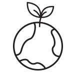

brand story Healthy Beauty with Nature
OOC는 자연과 함께하는 삶을 추구합니다.
자연에서 얻은 성분을 사용하여 피부속부터의 건강한 아름다움을 채우고
유기농 농장을 선택하여 믿을 수 있는 원료를 수급하고,
환경오염을 최소화하여 자연과 함께하는 삶을 추구합니다.
OOC's Story
4000년의 역사를 가지고 있는 올리브 근원지인 그리스 청정지역
크레타섬에서 재배된 유기농 올리브로 만들어집니다.
직접 손으로 올리브 열매를 수확한 후 24시간 이내에 현대식 시설에 옮겨,
냉압착 공법으로 생산한 첫번째 올리브오일인 엑스트라버진만을 담습니다.
OOC's Process
4000년의 역사를 가지고 있는 올리브 근원지인 그리스 청정지역
크레타섬에서 재배된 유기농 올리브로 만들어집니다.
직접 손으로 올리브 열매를 수확한 후 24시간 이내에 현대식 시설에 옮겨,
냉압착 공법으로 생산한 첫번째 올리브오일인 엑스트라버진만을 담습니다.
OOC's Efficacy 01
촉촉한 수분가득 피부
올레인산이 풍부하여 피부에 충분한 보습을 주고
항산화 성분이 자생력을 높여줍니다.
OOC's Efficacy 02
건강한 윤기나는 피부
올리브의 풍부한 비타민 성분이 건강한 피부와
활력있고 윤기나게 만들어 줍니다.
OOC’s 3 Promises
-
깨끗함 자연에서 얻은 올리브오일과
세정에 좋은 천연제품을 사용 하여
인공적이지 않고 자극없는
건강한 아름다움을 선사합니다.Clean
-
정직함 유기농 올리브 원산지인 지중해의
크레타섬에서 깨끗하고 건강한
유기농 올리브를 투명한 공정과정으로
정직하게 전달 드립니다.Honest
-

친환경 재활용 가능한 종이 포장재와
종이 패키지, 종이테이프를 사용하여
자연과 함께하는 지속가능한
친환경적인 삶을 추구합니다Green